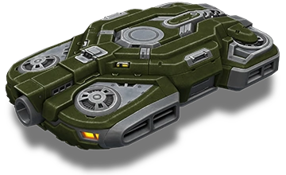
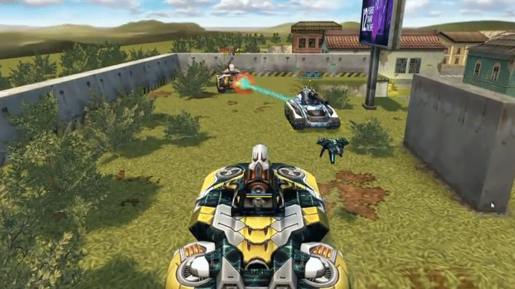
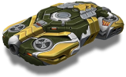

概括
由于其发动机永无止境的工作，阿瑞斯底盘可以在低空悬停在地面上。
当阿瑞斯被置于敌人的火力之下时，它会试图让自己回到一个稳定的位置。
如果滚动限制超过某个最大值，引擎将发生故障，阿瑞斯将翻转，但这是非常罕见的事件。
底盘运动的独特之处在于它不转动，而是向给定方向扫射。
底盘将完全适合移动游戏。在 PC 上，控制船体有两种不同的可能性：键盘和鼠标以及仅键盘。
仅在禁用键盘和鼠标控件的情况下使用时，坦克就像任何其他坦克一样被控制。
但是，当使用键盘和鼠标时，船体会向前、向后和向一侧移动。
扫射方向取决于当前相机位置，向前、向后、向左和向右键也是如此。底盘也随着相机转动。
BFG 是阿瑞斯独特的过速装置的名称。
这种过速装置会发射一个等离子球，该球飞行缓慢，
最后在碰到静态障碍物时爆炸，造成飞溅伤害。
当它在飞行时，等离子球会击中球范围内的坦克，治疗友军坦克并对敌方坦克造成伤害，同时无视他们的保护。
等离子球可被猎人的电磁脉冲击落，在接触敌方阿瑞斯的等离子球时爆炸，
并在泰坦的防护罩发生器启动时被中和。黄蜂的 N2 炸弹对它没有效果。
车库中的描述
沉重的底盘。即使在火下行驶时也能保持稳定。它的过速射出一个磁力球，用闪电攻击敌方坦克并治疗盟友
气垫坦克 «阿瑞斯» 成为第一个具有反重力功能的底盘。
第一代反重力船令人印象深刻的重量和比例使 «阿瑞斯» 进入重型船体类别。
发动机的反重力作用使船体保持在一个稳定的位置，在发射时补偿不平整的表面和后坐力。
要在战斗中转动气垫坦克，您需要非常努力。
《阿瑞斯》不妥协的稳定性使得建造一种无法在其他车体上使用的超强大武器成为可能：
对于原型车来说，第一枪就将炮塔撕裂了。
玩家说这是同一个 BFG 加农炮。我们不知道他们在说什么，
但以防万一，我们要求您不要分享这些信息。
装备改造

过速装置
BFG加农炮

皮肤

阿瑞斯标准

阿瑞斯 XT